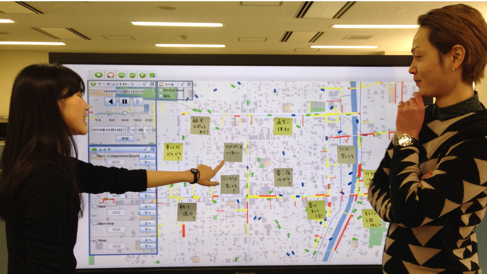

コース概要
先端社会デザインコースで学べること
先端社会デザインコース（FSDコース）では未来の情報技術社会に必要な、データサイエンス技術、インタラクション技術、デザインサイエンス技術について学びます。
これらの３つの技術はみなさんの身近なところで使われています。 例えば、データサイエンス技術の中には、大量のアンケートデータを分析し、顧客のニーズをつかむ技術が含まれます。
インタラクション技術とは、AmazonやGoogleのAIスピーカやLINEやMicrosoftのチャットボットなど、人間と機械の対話を実現する技術がその一例となります。
デザインサイエンス技術だと、人の認知を考慮して使いやすいものを設計することや、色々なアイデアが次々と出るような議論の場をデザインすることなどがあげられます。
カリキュラム
コース固有の科目について紹介をします。
1回生後期
- プログラミング言語:
- Pythonの基礎を学びます。
- プログラミング演習1:
- プログラミング言語で学んだプログラムを書くことを学びます。
- 先端社会デザイン概論:
- FSDコースの研究分野紹介を聞き、研究分野について理解をします。
2回生前期
- データ構造とアルゴリズム:
- Pythonを用いてプログラミングにおける初歩的なデータ構造とアルゴリズムを学びます。
- プログラミング演習2:
- データ構造とアルゴリズムで学んだプログラムを書くことを学びます。
- 先端社会デザイン創成1:
- インタラクティブなWebページの作成方法を学び、実際に作成します。
- 自然言語処理:
- iPhoheのsiriに代表される質問応答システムの基礎となっている自然言語処理の技術について初歩的なことを学びます。
詳細は以下のカリキュラムマップとシラバスを参照してください。
進路
先端社会デザインコース（FSDコース）ではまだ卒業した学生がいないため、卒業生の進路についての情報はありません。 前身となる学科を卒業した各研究室の学生は、大学院に進学する人と就職する人に分かれています。 大学院では立命館大学の大学院に進学する人が多いです。 就職する人の就職先は多岐にわたっています。 職種としてはSIerやシステムエンジニアなどが多いですが、営業職や教職に就く人もいます。